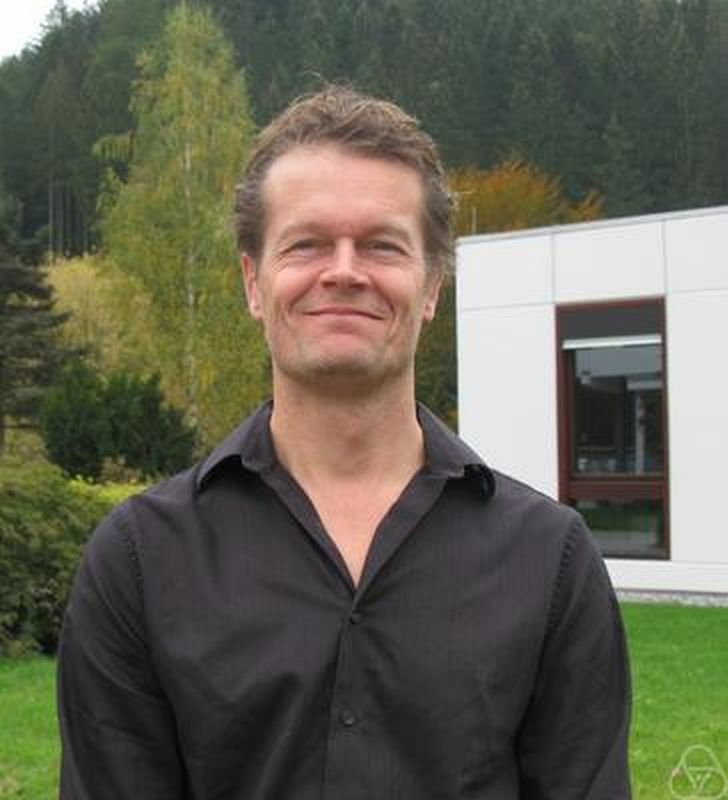

The Institute for Advanced Study of Fudan University and Shanghai Center for Mathematical Sciences have the honor of having the world-renowned statistician Aad van der Vaart here in Fudan to give a week-long lecture on nonparametric and high dimensional Bayesian statistics.

Aad van der Vaart
Photo source: Wikipedia
Bayesian statistics for high-dimensional and nonparametric models
Abstract
In the Bayesian statistical paradigm a prior probability distribution on the
parameter space is updated to a posterior probability distribution after seeing the data. The latter is simply the conditional distribution of the parameter given the data, based on viewing the likelihood as the conditional distribution of the data given the parameter. In nonparametric statistics the parameter is an infinite-dimensional object, such as a function or a distribution, and the prior is a probability distribution over the appropriate infinite-dimensional space. In high-dimensional statistics the parameter space is Euclidean, but there are typically more parameters than observations. A large variety of prior distributions have been developed, usually together with algorithms to simulate from the posterior distribution. In this course we shall consider the Dirichlet process and Dirichlet mixtures, Gaussian process priors, and the spike-and-slab and horseshoe priors for sparse high-dimensional models, among others. We shall further mostly be concerned with the question if Bayesian inference with these priors `works'. This entails two main desirables. First one would like that a posterior distribution concentrates most of its mass near the `true' parameter if in reality (and deviating from the Bayesian assumption) the data were sample according to this true parameter. This property can be captured by a contraction rate (if any) of the posterior distribution as the informativeness of the data (e.g. the number of observations) increases indefinitely. Second one would like that the spread of the posterior distribution can be interpreted somewhat in the same fashion as the width of confidence sets. We shall see that the desirables are met by large classes of priors, but that, unlike for finite-dimensional models, the prior does play an important role in the asymptotics. Families of priors with a tuning parameter (bandwidth, smoothness, sparsity level, etc.), which can itself be equipped with a prior or estimated by empirical Bayes, are especially attractive.
Tentative Schdule
Location: T.B.A.
| Date |
Morning (9:30-11:00, followed by a half-hour discussion) |
Afternoon (13:30-15:00, followed by a half-hour discussion) |
Extra |
| 5.21 |
Yes |
Yes |
A small reception takes place after 16:00 until 18:00. |
| 5.22 |
Yes |
Yes |
|
| 5.23 |
break |
break |
|
| 5.24 |
Yes |
Yes |
|
| 5.25 |
Yes |
Yes |
T.B.A. |
Biography of the Lecturer (Source)
Aad van der Vaart studied mathematics, philosophy and psychology
at the University of Leiden, and
received a PhD in mathematics from this university in 1987.
He held positions in College Station, Texas and Paris (not in Texas), held a Miller fellowship in Berkeley, and was
visiting professor in Berkeley, Harvard and Seattle. Following a long connection
to the Vrije Universiteit Amsterdam
he is currently Professor of Stochastics
at Leiden University. He is a member of the
Royal Netherlands Academy of Arts
and Sciences. His research has been funded by NWO, VU-USF, STW, CMSB, NDNS+, STAR,
and most recently by the European Research Council
(ERC Advanced Grant, 2012).
He received the C.J. Kok prize in 1988, the van Dantzig award in 2000, and
the NWO Spinoza
Prize in 2015.
Aad van der Vaart's research is in statistics and probability,
as mathematical disciplines and in their applications to other sciences, with
an emphasis on statistical models with large parameter spaces. He wrote
books and lecture notes (on topics such as empirical processes, time series, stochastic
integration, option pricing, statistical genetics, statistical learning, Bayesian nonparametrics),
as well as research papers. See research page for
more information.
Aad van der Vaart was associate editor of the Annals of Statistics,
Statistica Neerlandica, Annales de l'Institut Henri Poincare,
Probability Theory and Related Fields, co-editor of Statistics and Decisions,
and is currently associate editor of Indagationes Mathematicae,
Journal of Statistical Planning and Inference and ALEA.
Keynote lectures include the Forum Lectures
at the EMS 2009, the Le Cam lecture at the
JSM 2009, invited address at the International Congress of
Mathematicians in 2010, a
foundational lecture at the world meeting of International Society for Bayesian Analysis in 2012,
the Hotelling lectures in 2017
and the Barrett lectures in 2017.
He was program chair for the European Meeting of Statisticians 2006 in Oslo and BNP10 (2015) in Raleigh, and local
chair of BNP9 and the European Meeting of Statisticians 2015.
Among former administrative functions are
president of the Netherlands Society
for Statistics and Operations Research (2003-07),
head of the Department of Mathematics of VU University (2002-06),
chair of the European Council of the
Bernoulli Society,
scientific chair of the Stieltjes Institute,
chair of the mathematics
board of the Lorentz Centre,
board member of the NDNS+ and STAR clusters,
and council member of the International Statistical Institute.
He is currently council member of the
Institute of Mathematical Statistics and member of the steering committee of the
Statistical Science master in Leiden. Since September 2015 he is Scientific Director of the
Mathematical Institute of Leiden University.
Last Updated: 3 May 2018
{kind=link}